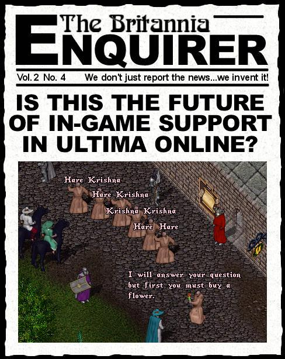

I was reading an article in Lum the Mad about Electronic Art's plan to recruit volunteers and counselors from third world countries, notably India, allegedly to get around the US labor laws, and there was something else in the article about them dressing in Saffron Robes. As soon as I read that I got this flashback straight out of the Seventies, of the Hare Krishnas you used to see in almost every airport and bus terminal, chanting and handing out flowers. This episode of the Enquirer is the result. Let's just hope it doesn't come to pass in UO ... but nothing these days would suprise me.